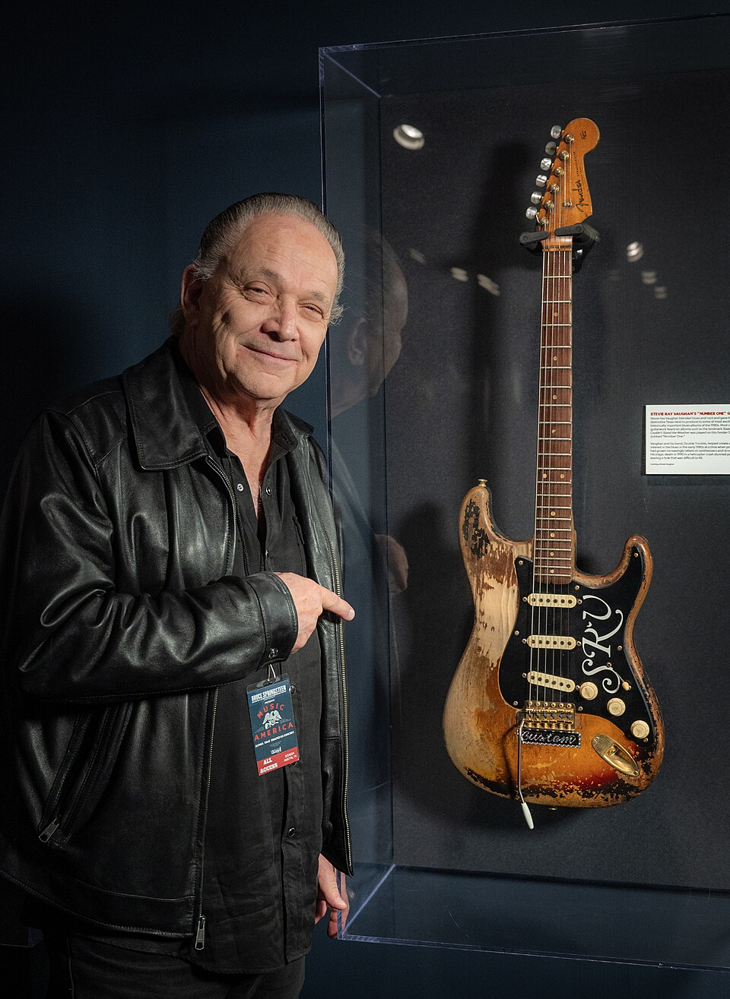
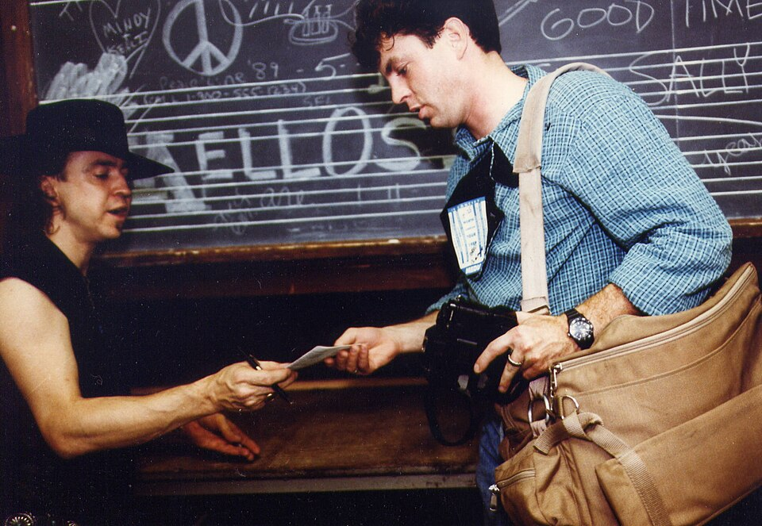
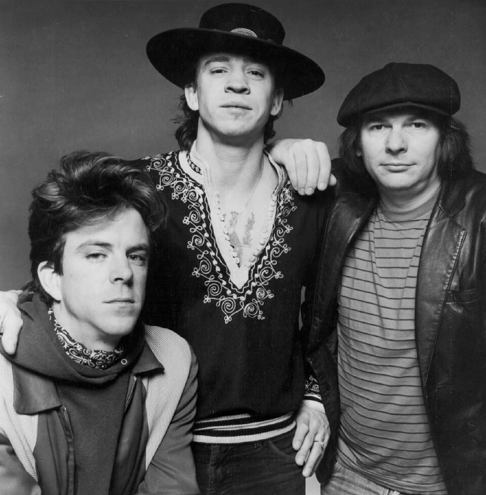

Stevie Ray Vaughan
Powered by the blues.
Soulful solos.
A larger-than-life presence.
A legend whose music still burns today.

Photo: LBJ Library / Wikimedia Commons — Public Domain
Stephen Ray Vaughan was born on October 3, 1954, in Dallas, Texas. While neither of his parents were musicians, the environment he and his brother grew up in fostered a deep love for the blues. So, with blues in his veins and soul screaming from his heart, Stevie touched the world and showed it that the blues was not dead. How did he get there, though? Let's start at the beginning.
He was born to his parents, Jimmi and Martha. Jimmi was a former Marine, and Martha was a secretary. To say their house was strict would be an understatement, as Stevie’s father was known to have a violent temper and an addiction to alcohol. To help the situation, their mother would often take the boys to blues festivals to escape the tense home environment. Some of the earlier artists they saw on stage were Jimmy Reed and Fats Domino. Even at an early age, he was not only surrounded by the blues, but local musicians would also come over for drinks when their father invited them. As time went on, both of the boys developed a love for blues music.
Soon enough, by the age of seven, Stevie was given a plastic toy guitar with three strings on it, while his older brother had the real thing. Stevie would often listen to his older brother play guitar, and this inspired him so much that he would sneak into his room and play the real thing. Stevie was self-taught as a musician. He couldn’t read music, but what he did learn to do was listen to the radio and records he loved and copy what he heard. Some of his earlier influences were B.B. King, Albert King, and Jimi Hendrix. By the time he was 12, he was performing with garage bands. It was common for him to stay up all night playing and practicing, only to fall asleep in class the next day. This pattern continued until he dropped out at the age of 17 because he had lost interest in school. Knowing what he wanted in life, he moved to Austin, Texas.
After moving to Austin, he had it rough. He would often cash in beer bottles for money to eat. He slept in cheap motels and on couches at recording studios. He didn’t want a conventional job because he wanted to dedicate his time to his dream. While in Austin during the better part of the 1970s, he played in several different bands. One of them even made a record, but it was never distributed. The second band he joined gave him steady income and exposure. Through each band and experience, he learned more about what he wanted and what direction he wanted to take with his music and his life.

Photo: Joe Bielawa / Wikimedia Commons — CC BY 2.0
By the late 1970s, he met his bandmates from Double Trouble. They would often play at a club called Antone’s. Here, Stevie learned from many of the blues legends we know today, including Buddy Guy and Muddy Waters. However, during this time, he also had to learn how to deal with his stage fright. Through experience and, unfortunately, some bad habits he had developed from a young age, he found ways to cope with it. He developed a drinking problem, having started drinking regularly when he was only 12. As for the band as a whole, their big break came from a music festival they played in Montreux. With this show, they finally got the attention they deserved. After this success, the band toured and played everywhere.
By the time 1986 rolled around, though, his body couldn’t take the substances anymore, and he collapsed at a show. The years of alcohol and cocaine addiction had taken their toll. He entered rehab and learned to play sober. It was during this time that he and his brother created a record, and he would often give sober speeches at his shows. Unfortunately, despite getting sober and putting his life back on track after a divorce from his wife, he had an accident that took his life early.
His last show was in Alpine Valley in 1990. The final show finished with a 16-minute jam of "Sweet Home Chicago" with the people he admired most: his brother Jimmy, Eric Clapton, Buddy Guy, and Robert Cray. While his life was anything but easy, he chose to take his troubles and voice them through the music we still have today. Music that, if you listen closely, you can feel as he plays those notes.

```htmlPhoto: Don Hunstein / Wikimedia Commons — Public Domain (U.S.)
```Explore the stories behind the music. Discover the legends who reshaped our musical landscape.